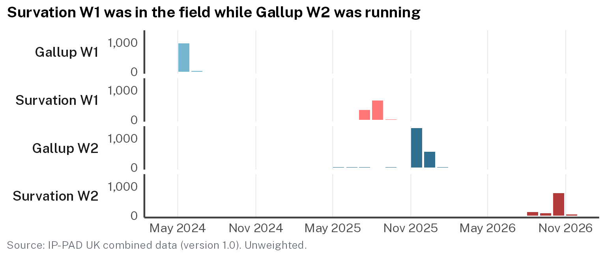

| Survey | Ages | Interviews | Fieldwork | Recontacted from wave 1 | Who answered |
|---|---|---|---|---|---|
| Gallup W1Gallup International, wave 1 | 16–21 | 988 | May to June 2024 | None | The young person |
| Survation W1Survation, wave 1 | 12–17 | 993 | July to September 2025 | None | A parent, then the child |
| Gallup W2Gallup International, wave 2 | 16–26 | 1,985 | May 2025 to January 2026 | 55 | The young person |
| Survation W2Survation, wave 2 | 12–18 | 1,002 | August to November 2026 | 72 | A parent, then the child |
The data
The IP-PAD UK data combine four online surveys of young people in the United Kingdom, carried out between 2024 and 2026 by two fieldwork providers that each ran two waves. The combined file has one row per interview and holds 4,968 interviews with 4,841 young people. Apart from two questions about the future that only Survation asked, it includes only questions asked in at least two of the surveys.
The four surveys
Gallup respondents answered all questions themselves. In the Survation surveys, a parent first gave consent and reported the child’s age, gender, region and type of place, before the child answered the rest of the questionnaire. In both second waves, the providers invited their first-wave respondents back and then added new respondents. Because few Gallup respondents returned, Gallup W2 added a separate sample of 22 to 26 year olds, and Survation W2 also admitted 25 respondents aged 18 outside its quota.
When the surveys were in the field
Each row shows one survey. The bars give the number of interviews in each month, on the same scale for all four surveys.

Three of the surveys carried out most of their interviews within two or three months. Gallup W2 began in May 2025 with a few interviews each month, and 95% of its interviews took place in November and December 2025, when the 22 to 26 year olds were added.
Before comparing surveys
The four surveys share most of their questions but were not designed as one sample. The differences below matter whenever answers are compared across surveys, and the explorer lets you check whether a pattern holds in each survey separately.
- Different age ranges. The two providers overlap only at ages 16 to 18, so a difference between Gallup and Survation can reflect age as much as the provider.
- Wave is not time. The variable
wavecounts the waves within each provider. Survation W1 was in the field in the summer of 2025, while Gallup W2 was still running, so the fieldwork dates are the better guide to timing. - Not weighted. All respondents come from online panels and the data are not weighted, so the results describe the young people who took part rather than all young people in the UK.
- Different quality checks. Each survey removed careless or automated answers by its own rules. Gallup W1, for example, kept respondents who failed its attention check, whereas Survation removed those who failed two checks.
- Survation W1 scores higher on 0 to 10 scales. Averaged over the five party ratings and the left-right scale, Survation W1 respondents score 5.4, against 4.3 to 4.5 in the other surveys. Those who took part again a year later had already answered much like the other surveys in the first wave (4.3), which suggests that the difference lies in who took part. The insight on left and right shows an example.
- Few and uncertain panel links. Only 55 Gallup and 72 Survation respondents took part in both waves of their provider. Judged by age and gender, 48 of the Gallup links and 39 of the Survation links are plausible. Survation links run through the parent’s panel account, so a sibling may have answered in some cases.
- Small wording differences. A few questions were worded slightly differently between the surveys, such as the introduction to the party ratings. The codebook notes each of these differences.
What the data cover
This website uses 107 questions from the combined file, grouped by topic below. Of these, 55 were asked in all four surveys, while Survation W2 asked fewer of the shared questions (61).
| Topic | Questions | Gallup W1 | Survation W1 | Gallup W2 | Survation W2 |
|---|---|---|---|---|---|
| Interest and participation | 11 | 10 | All | 10 | 10 |
| Ideology | 5 | All | All | All | 4 |
| Party feelings | 5 | All | All | All | All |
| Issue attitudes | 14 | All | All | All | All |
| Ideological labels | 11 | All | None | All | None |
| Democracy and populism | 14 | All | All | All | 10 |
| Trust in institutions | 5 | All | All | All | None |
| Living and belonging | 4 | All | All | All | 1 |
| Outlook and personality | 32 | 28 | All | 27 | 11 |
| Demographics | 6 | All | All | All | All |
Search the questions
Search by variable name, question wording or topic to see which surveys asked a question.
Getting the data
The combined data and their documentation will be released in the near future, and we will post a link to them on this website. The data will come as csv and RData files, with copies for SPSS and Stata, together with a codebook that notes how each question was asked in each survey.
They will be released under a CC BY 4.0 licence, so you may share and adapt them as long as you cite them as given on the About page.